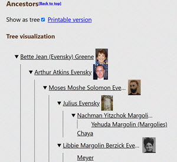
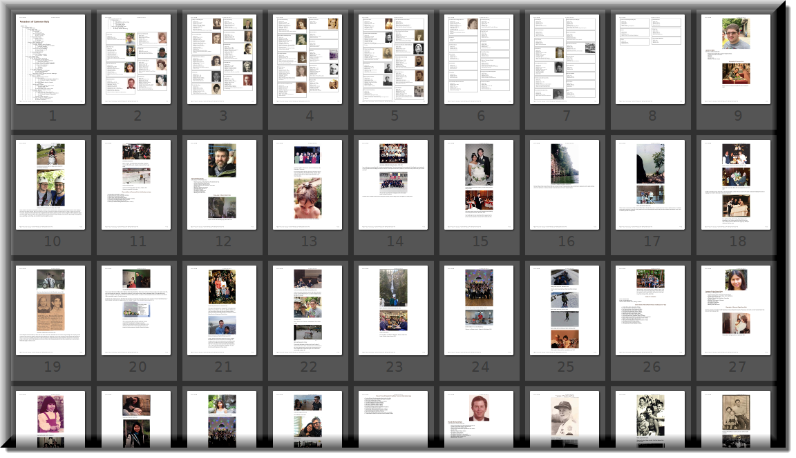
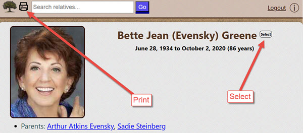
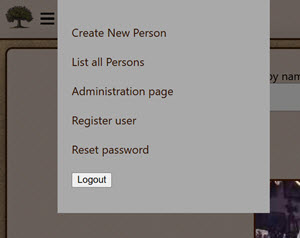
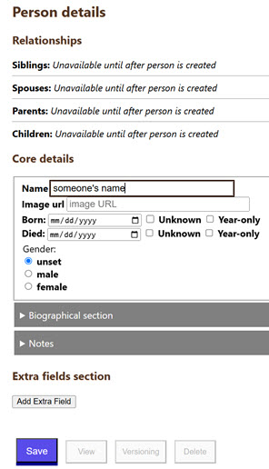
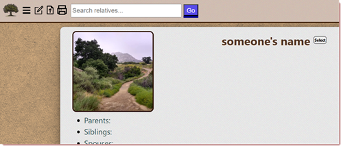

Memoria is a family-tree scrapbook website, written in Java. Users may add text, pictures and videos to profiles of family members, and link those persons together through their family relationships.
Visit an example site: here
This will skip explaining the rudimentary basics and focus on the less-obvious features.

Each person has a link for "Extended relatives" under their immediate family members. This page provides lists of that person's close relatives, their cousins, uncles, ancestors and descendants. Ancestors and descendants may be viewed as a tree by checking the "Show as tree" checkbox. Also, there is a "Printable version" link which will contain all the relatives data. Depending on the length of the family member's pages, and the number of ancestors or descendants, the page may be very large. For my own family, it is not uncommon that this page be several hundred pages long when printed.

There are just a couple more features to point out. This screenshot shows both of them.

The print button will show a rendering of that user's page in a format that is customized to be most suitable for printing.
The select button will set that person as the target for relations. Once set, clicking on other persons will show their relationship to the target person at the top of the page.
In order to administer the system, you must be authenticated. The first time Memoria is run, it will create a file in its directory called "admin_password" with a randomly-generated string, like "Gb0KCtK5skSwP7ju3nuD". That is the password for the administrator. To login, click the "Admin login" link in the top right and enter these credentials:
Username: admin
Password: (enter the text from the file as mentioned)


One of the most basic functions is adding family members to the database. Once you are authenticated as an administrator, there will be a menu button in the top left of the page. Click that and select "Create New Person".

On the subsequent page, there are several fields, but only one is required - the Name field. Enter something there, which will cause the Save button to become enabled. Clicking save will send your data to the server for storage. It is easy to edit later, so no worries if you make any mistakes, or need to delete it.
Each family member entry stands on its own as a document. Although the system keeps track of relationships between members, it is designed to allow editing any member without constraints.
For example, later on we will talk about setting relationships between persons, and if someone has a relationship to a family member that was deleted, it will show up with a warning, but continue to work. But let's not get ahead of ourselves.
After clicking save, the data is now stored in the database on the web server, and we can click the "View" button to see the rendered view. Go ahead and try that now.

To delete a person, open their edit page. You can do this by searching for them, viewing their page and clicking the Edit icon at the top, or by going to the burger menu, then List all Persons, finding the person, then clicking Edit.
Once there, the Delete button is at the bottom. Click that, and a page will open up warning about what will take place. If you click the Delete button on this second page it will take action. After this is done, that person's page will no longer appear, and any existing links to that person from other persons will show as "MISSING"
Relations are added on the Edit page, in the "Relationships" section at the top.
If there is a person already existing to connect, enter their name in the appropriate field. While doing so, a dropdown will appear and you must select that person. The button at the right will change from "Connect new person" to "Connect existing person". If that was not the right person, click the Reset button.
Alternately, if you want to add a relation and create that person at the same time (which is a serious time saver), just enter the name and click "Connect new person", ignoring the dropdown if it appears. You will then be shown a page indicating how to connect this person, and you will have two options. In the "Simple" case, it will just add a two-way relationship between the two persons. In the "Complete" case, it will add the new person to all other immediate family. In either case, all the connections to be made will display. Check carefully to ensure. We will talk about removing relations elsewhere.
If you are starting the application from the command line in the source code directory (downloaded from https://github.com/byronka/memoria_project):
$ make run
You will see logs, and then this line indicates the system is ready:
System is ready after 3704 milliseconds. Access at http://localhost:8080 or https://localhost:8443
It is now ready to access in a web browser (see http://localhost:8080/).

If you would like to build a jar, that may be done by running
make jar on the command line. The file location will be
printed in the terminal.
Starting the application is done by running make runjar
If this is the first time you are starting and there is no
memoria.config file in the same directory as the jar, and no
minum.config, complaints will be output about using
defaults.
Also, if it does not already exist, a database directory will be created at "db".
Absolutely essential information is the template directory and the static files directory. Without these, basic functionality will be unavailable. See that the following values are configured properly: STATIC_FILES_DIRECTORY in minum.config and TEMPLATE_DIRECTORY in memoria.config